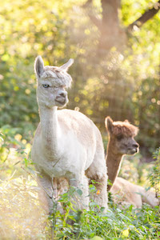
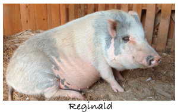

In November of 2013, a horse trailer backed up to the Hope Haven barn and out hopped two of the sweetest alpine goats we have ever met. These goats had been left behind when their owners moved away. Little did we know then, but they have a viral disease that makes them less useful in a breeding herd. We suspect that was the reason for their abandonment. But we have been treating them and they are strong and happy. They love attention and can't wait to get into mischief.
 Butters came to us in August of 2014 after utter neglect. He had been starved, deprived of any medical care for parasitism, and denied any hoof care for years. Worse than his physical condition was his distrust and dislike of people. Thankfully, Butters blossomed here at the Haven into the most gorgeous, sassy man! He loves his freedom and the other animals, especially Buddy and Jack, the alpacas. He has filled out, his eyes sparkle, and his coat is the most beautiful gold. And he has overcome his fears! He now cheerfully comes to visitors to take a treat and stands calmly for the farrier. He is a heart-warming success story and such a charismatic individual - we would be lost here at the farm without him.
Butters came to us in August of 2014 after utter neglect. He had been starved, deprived of any medical care for parasitism, and denied any hoof care for years. Worse than his physical condition was his distrust and dislike of people. Thankfully, Butters blossomed here at the Haven into the most gorgeous, sassy man! He loves his freedom and the other animals, especially Buddy and Jack, the alpacas. He has filled out, his eyes sparkle, and his coat is the most beautiful gold. And he has overcome his fears! He now cheerfully comes to visitors to take a treat and stands calmly for the farrier. He is a heart-warming success story and such a charismatic individual - we would be lost here at the farm without him.
 Rigby and Ruckus are two very special emus that live at the farm. Emus are often raised for their meat and their oil which is used in many products from soap, lotions, massage oil, lotion, and lip balm. Our boys will never be used for any product. We love them for who they ARE, not for what they can PROVIDE. They are incredibly inquisitive, affectionate, and silly. Hope Haven wouldn't be the same without their antics!.
Rigby and Ruckus are two very special emus that live at the farm. Emus are often raised for their meat and their oil which is used in many products from soap, lotions, massage oil, lotion, and lip balm. Our boys will never be used for any product. We love them for who they ARE, not for what they can PROVIDE. They are incredibly inquisitive, affectionate, and silly. Hope Haven wouldn't be the same without their antics!.
We have alpacas and llamas here at the Haven! Buddy and Jack are two stately gentleman alpacas that came to the Haven in the summer of 2013. Both alpaca and llama can be raised for their fiber, which is woven in many products. But none of animals need to “earn-their-keep” here! We love them for just being them!
One March day in 2014, while there was a break in the snow, a trailer pulled into the farm driveway. In a few minutes, the back doors swung open and two nervous llamas gamboled down the ramp and into our hearts. These unwanted beauties were saved from deplorable conditions by a good Samaritan. Without Hope Haven, they may not have had any place to call home. Now they share the huge pasture with all the animals and they have made our Haven family a little bigger and a lot better!
Wally is one of our our resident farm hogs! He was rescued from certain slaughter as a piglet by two wonderful members of HSUS. On any given day in the US, there are more than 66 million pigs on factory farms, and 100 million are killed for food each year. Thank goodness Wally will never be one of them! He instantly wins everyone’s heart with his sweet, kind disposition and huge lumbering size. What a gentle giant! He is friends with everyone he meets and want nothing more than to crawl into a lap for some snuggle time. Now that he weighs over 200 pounds that is getting hard to do! To meet Wally is to love Wally!
 Little Templeton is a Hereford mix farm hog found as a piglet near death in a bucket at a farm in Wisconsin. When the good Samaritan asked about the poor little animal, the farmer said it was a sick piglet so of no use and the woman could take it if she wanted. Thankfully, she did, and brought it to a local rescue organization that searched us out and drove the little pig all the way to Pittsburgh - even sneaking him in to the hotel room for the night. Templeton is the very essence of what is sweet and wonderful about farm animals. He is a very “good pig”. Baby Ophelia is his best friend. She is a Hereford farm hog saved as a piglet from a meat farm. The two of them are always scampering around the pasture together, getting into mischief.
Little Templeton is a Hereford mix farm hog found as a piglet near death in a bucket at a farm in Wisconsin. When the good Samaritan asked about the poor little animal, the farmer said it was a sick piglet so of no use and the woman could take it if she wanted. Thankfully, she did, and brought it to a local rescue organization that searched us out and drove the little pig all the way to Pittsburgh - even sneaking him in to the hotel room for the night. Templeton is the very essence of what is sweet and wonderful about farm animals. He is a very “good pig”. Baby Ophelia is his best friend. She is a Hereford farm hog saved as a piglet from a meat farm. The two of them are always scampering around the pasture together, getting into mischief.
In May of 2015, we were lucky enough to work with a wonderful sanctuary in NJ to rescue four sheep after the farmer that was raising them passed away. Without a rescue, they would have been sold at auction for their meat. After a long, nerve-wracking road trip, the little flock arrived at Hope Haven. Now the two mother ewes will get to live side by side with their babies for their whole lives - this is extremely rare in the farming industry. They add such a wonderful bucolic quality to Hope Haven. How did we get along without them?
A wonderful flock of midget white turkey live at Hope Haven. Tony, Millie, Shasta, Dixie Lee, and Hobbie were saved directly out of a factory farm where they were living in horrid conditions packed in among hundreds of other birds, none of which had access to any individual attention or veterinary care. They have been the light of Hope Haven ever since their arrival. Their sweet peeps fill the barn with joy as they happily explore and the girls create little nests for their eggs. The group loves resting in the cool aisle of the barn, pecking at peas and corn, and when someone is feeling especially naughty, they will climb the feed room stairs to nap among the fragrant bales of hay. There is no place on earth where they would be more loved than here at Hope Haven Farm.
We typically have about 10 roosters here at the farm at any one time. Merl and Earl were unwanted casualties of the backyard chicken movement. Pittsburgh city ordinances allow urban residents to keep hens on their property. Sadly, there are many well-intentioned folks discovering that 50% of the time, their fluffy peeps grow into loud and feisty roosters that are not welcome within the city limits. Open-door shelters are now inundated with these unwanted but charismatic birds. Usually roosters can’t be housed together due to their territorial nature but not so with these two!! These bantum Silkie brothers are attached at the hip and are rarely apart. They also get along peacefully with all the other roosters - most of them full sized - that call Hope Haven home.
A group of frightened and parasite-ridden peafowl were brought to Hope Haven in the Summer of 2012 by a Washington County Humane Agent after she discovered the owner of the birds was keeping them in a small shed with no outdoor access or even sunlight! Thousands of people all over the world keep and breed peafowl as a hobby or business around their homes or on game bird farms. But these particular animals were suffering from malnutrition and parasite infestation. Now at the Sanctuary and treated for their aliments, these birds have become docile and sweet. They coo and peep at their human caregivers and enjoy resting for hours with one another in the sunshine!
Evan and Craig are two of the dozen geese here at the farm. Most of our geese residents are Emblem geese, but the boys are Chinese Geese that were taken by local humane officers after their owner went to jail. This breed is often raised for meat or egg production and even used as "watchdogs" since they turmpet loudly at the sight of strangers. These bonded brothers are curious and chatty and have fit in quite nicely at the Sanctuary.
Baby Lily was purchased as a whim by two college students. When they realized having a pig in their dorm room was not the best collegiate idea they surrendered her to the humane society. Pot-bellied pigs can live 10-15 years and can grow to be 200 pounds. Perhaps not the best choice for a tiny dorm room! After Lily was spayed she came to Hope Haven and moved in with Reggie. They are now the best of friends!! She is a spirited and fearless little porcine who rarely stands still except for a quick nibble on the soles of your sneakers!!
Pigs are some of the most intelligent, determined, and expressive animals in the world! It’s been proven that pigs have some of the same intellectual capabilities of a 3-4 year old human child. Isaac is no exception! He was found as a “stray” running through a Pittsburgh city neighborhood in the middle of winter. A kind woman warmed the little piglet up, fed him some Oreos, and then brought him to the humane society. Perhaps this is the origins of his sweet tooth? He is now over 200 pounds and gentle as a lamb. He spends much of his day arranging the hay in his shed to provide the highest level of comfort. But he will happily take a break from his house work to enjoy a tummy rub or an ear massage.
***We had to say goodbye to our sweet friend Isaac in the Fall of 2013. RIP, good pig. You are loved and missed every day.***
Like most farm animals pigs are extremely social animals. They love and need the companionship of others of their kind. Persephone came to Hope Haven soon after being purchased by an elderly man at an open air market in Ohio. After bringing the piglet home to his small apartment the gentleman realized he could not properly care for a growing porcine and brought her to the shelter. Persephone’s favorite things are apples, sleeping as deeply under a hay pile as possible, and the company of all the other pigs.
Pigs have a higher intelligence than dogs and can also suffer some of the same illnesses. Reggie was saved from a petting zoo by a Good Samaritan but was soon brought to the shelter when the 9 pound piglet wouldn’t stop scratching and itching himself! Turns out Reggie had mange – a very contagious skin mite that is seen in dogs. At Hope Haven, Reggie had to be isolated from the other pigs, given weekly medication, and daily medicated baths. We are happy to report he has made a full recovery and gained weight! He now lives with the herd and loves every day!
Jive is our heritage breed turkey who came to us as a tiny peep from a hobby farm where he would have been sold for meat. He is the most emotional of our feathered fowl and was literally crestfallen when he lost his mate back in 2012. He secluded himself in the eaves of the barn and no amount of soothing or cajoling by the farm staff would bring him out. There is no doubt that turkeys bond and have strong feelings for each other. Jive is an independent gentleman now at the farm and enjoys spending his time in the company of the chickens and ducks. He never showed any interested in the other turkey here but we hope one day he will find another mate to heal his heart.
Ruppert is a gorgeous Muscovy duck. He was being raised on a duck farm in Vermont for meat. When the farmer decided to stop the business she allowed us to take some birds. Ruppert is an aloof and unflappable gentleman and much loved here at the farm. Muscovys are often called the “quackless” duck because they are so quiet but Ruppert expresses himself with a low breathy call and a quick wag of his big feathery tail. He loves grapes and a bath in a freshly filled kiddy pool! Who doesn’t?
A very sad issue seen at shelters is that of animals raised in classrooms. Ducks are frequently hatched in small incubators to show children “the miracle of life”. But when the birds get larger and space becomes an issue, the ducks are all-too-often surrendered. What does this disregard for life teach our children? Many of the Pekin ducks at Hope Haven are from a classroom experiment, and the others were unwanted pets usually purchased as Easter decorations. Pekins do not fly and are very sweet and passive. Our group of 35 can often be seen gamboling around the farm, mingling in the pond, or traipsing about the fields, usually in single file, which won many of them their military names. Captain Applesauce, Commander Candy Corn, General Lima Bean, Lieutenant Sweet Potato, Officer Pancake, and Todd are just a few of our ducks that love nothing more than preening their feathers in the sunshine.
Every spring, humane societies can expect to get in several boxes of scruffy chicken youngsters. This is the sad fate of many Easter peeps that people buy to entertain their children. Most people don’t consider the future of the birds, so when they begin to blow their fluffy down and children lose interest in them, the chicks are boxed up and dropped off at shelters. This was the fate of all too many of the Haven hens. These beauties now live their lives scratching around the yard and enjoying themselves. We love watching their antics and appreciate their insect-control abilities. The veggie garden is always free of buggy pests when the girls are around!

What’s a farm without barn cats? The Hope Haven felines are just the sassiest kitties you will ever meet! Alfred and Wyatt were feral kitten found along the side of the road. Though they were fearful and sickly when they came here, they are now vivacious and the most lovable brothers you will ever meet. Newcomer Hamster (who is too elusive to ever be photographed!) is still warming up to humans, but we hope she is enjoying the creature comforts that the Haven can provide. We love having them all around and can’t imagine not having their furry faces to kiss every morning!

Contact Info:
Email:
Karen@HopeHavenFarm.org
UPCOMING EVENTS:
Hope Haven participates in many festivals and fundraisers during the open season of May through October. Please see the Events section of our monthly e-newsletter and the events tab of our FaceBook page to get involved with all the activities.
Our biggest upcoming event is Biscuits Bingo on March 4th, 2017. It takes place at IBEW Hall at 5 Hot Metal Street. There will be raffle baskets, door prices, and (obviously) BINGO! There's a $25 admission fee, which goes toward the benefiting organizations. Doors open at 10am and bingo starts at noon!
SOCIAL MEDIA:Please share us with your friends everywhere! Keep up with all the fun going on at the farm!!


IN THE NEWS:
Here are the various places that have featured Hope Haven!
Feature in November NEXT Pittsburgh
Short You Tube piece called Hope for Animals by Brians Art for Animals
July/August edition of Maniac Magazine, page 68-69
Feature on "Animal Talk with Tegan" on radio 1480 WCNS
Social Venture Partner's Fast Pitch competition
Setting the SEEN clip about Hope Haven Farm
Blog post about the Setting the SEEN clip
Great You Tube piece from Jillclimbs
Channel 11 News with Peggy Finnegan - Proud to be from Pittsburgh: Hope Haven Farm